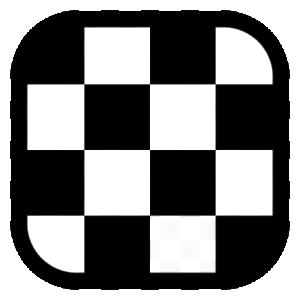

El logotipo de Pragma Chess, una P que se lee jugando
Cuatro piezas en una esquina de un tablero. Quien no juega ve un tablero; un jugador ve las jugadas, y las jugadas dibujan una P.
Pragma Chess tiene un logotipo oficial. A primera vista es una esquina de un tablero de ajedrez, dieciséis casillas con cuatro piezas: dos caballos, un peón y una torre. Pero si se mira con ojos de ajedrecista, es una letra: la P de Pragma. No está dibujada en ninguna parte, y este artículo cuenta dónde está y cómo llegamos a ella.
De dónde partimos

El logotipo de Pragma Chess siempre ha sido un tablero: cuatro casillas por cuatro, blancas y negras, dentro de un marco redondeado. Es el icono que se ve en la barra de tareas y en el escritorio, y funciona porque es sencillo: se reconoce incluso a dieciséis píxeles, cuando de cualquier dibujo queda poco más que una mancha.
Una P de peones
La primera idea fue escribir la P de Pragma con piezas. Siete peones sobre las casillas: el trazo vertical en una columna y el ojo en las tres filas de arriba. Cada peón es el negativo de su casilla, blanco en las oscuras y negro en las claras.
De cerca funcionaba; en pequeño, no. A treinta y dos píxeles un peón es un punto, y la P se pierde en un tablero lleno de ruido. Nos quedamos con dos versiones: la sencilla, el tablero limpio, sigue siendo el icono del programa en todos los tamaños; la rica aparece donde hay espacio para leerla, en la ventana de bienvenida y en este sitio.
Aquel intento dejó también una regla: manda la cuadrícula. Cada pieza está en el centro de su casilla entera, incluso donde el marco cubre una parte. Donde una pieza entra en el marco negro, se vuelve su negativo y se hace blanca. Fíjate en la base de la torre: es la primera sorpresa, y casi nadie la nota.
La P que se lee a través de las jugadas
Luego llegó la pregunta correcta: ¿y si la P no se dibujara, sino que se describiera? Los siete peones dejaron su sitio a cuatro piezas, y la letra se convirtió en el recorrido de sus jugadas.

La esquina del tablero es la de arriba, de la columna b a la columna e. Lo dicen los colores de las casillas: la casilla de arriba a la izquierda, b8, es oscura, como en un tablero de verdad. Los caballos están en c8 y c6, el peón en e7 y la torre en c5.
El ojo. Los dos caballos pueden capturar el peón de e7. El salto del caballo se describía antes justamente así: un paso de torre y uno de alfil. El caballo de c8 da un paso de torre hasta d8 y uno de alfil hasta e7; el de c6, un paso de torre hasta d6 y uno de alfil hasta e7. Los dos recorridos se cierran sobre el peón y dibujan el ojo de la P.
El trazo vertical. La torre de c5 no puede subir por la columna, porque su propio caballo de c6 le cierra el paso. Pero una torre no necesita moverse para contar: mira la columna a través del caballo, en rayos X, y la tensión que crea ya es una amenaza. Cuando el caballo de c6 salta a e7 para capturar el peón, la columna se abre y la línea de la torre sube hasta c8. Ese es el trazo vertical de la P.
La misma jugada dibuja el ojo y libera el trazo: la letra entera se completa en un instante, como en un ataque a la descubierta.
Un dibujo que completa quien mira
La P no está en el tablero: está en las jugadas. Quien no juega ve cuatro piezas; un jugador ve dos caballos que apuntan al mismo peón, una torre al acecho detrás de una pieza propia, y luego la letra. El logotipo lo completa el conocimiento de quien lo mira.
Nos gusta porque cuenta lo que Pragma Chess intenta hacer: mirar una posición y entender lo que hacen las piezas. Es lo que hace Explicar, dibujando en el tablero las flechas que justifican una valoración, como las de la imagen de arriba.
El logotipo rico está en la ventana de bienvenida de Pragma Chess y en este sitio; el icono del programa sigue siendo el tablero sencillo, que se lee mejor en pequeño. Si lo leíste antes de llegar al final de este artículo, enhorabuena: estaba hecho para ti.